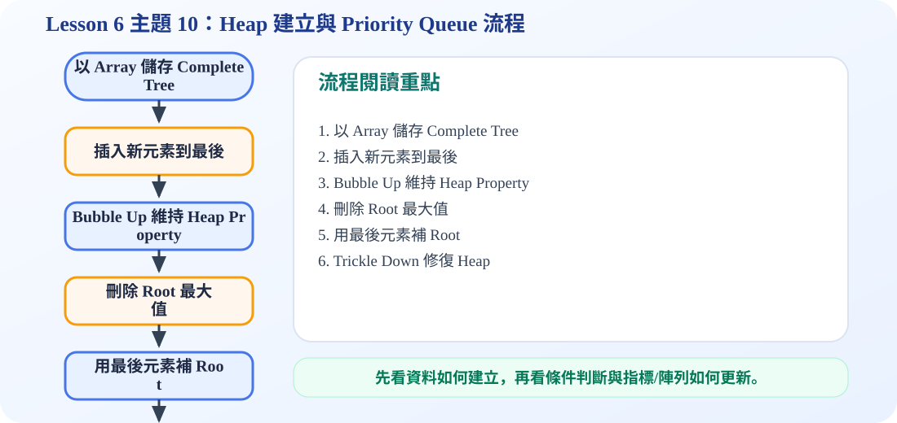

一、Heap 的基本定義
Heap 是一種特殊的二元樹。它通常需要同時符合兩個條件：第一，它是一棵 complete binary tree；第二，它符合 heap property。
因為 heap 是 complete binary tree，所以很適合用 array 儲存。不需要每個節點都放 left pointer 和 right pointer。
二、Heap 的陣列表示法
投影片 38 說明 heap 可以看成 complete binary tree，也可以直接存在陣列中。通常 index 從 1 開始比較方便，因為 parent 與 child 的位置可以用簡單公式計算。
Parent
節點 i 的 parent 在 i / 2。
Children
節點 i 的 left child 在 2i，right child 在 2i + 1。
例如節點 3 的 left child 是 6，right child 是 7；節點 6 的 parent 是 3。
三、Max Heap 與 Min Heap
投影片 39 比較 max tree、max heap、min tree 與 min heap。考試最常問的是 Max Heap 和 Min Heap 的父子大小關係。
Max Heap
每個 parent 的 key 都大於或等於 children，所以最大值一定在 root。
Min Heap
每個 parent 的 key 都小於或等於 children，所以最小值一定在 root。
只有父子之間需要符合規則，不代表整個陣列是完全排序好的。
四、動畫：維持 Max Heap Property
投影片 40 的重點是：當插入或刪除造成 heap property 被破壞時，要透過交換讓它恢復。
五、互動示範：Heap 陣列變化
下方用 index:value 顯示 heap 陣列。index 1 是 root。
插入會用 bubble up；刪除最大值會用 trickle down。兩者目的都是讓 parent 仍然比 children 大。
六、C 程式碼：Max Heap Push / Pop
max_heap_demo.c
包含 MaxHeap 初始化、push、pop 與陣列輸出。可觀察插入與刪除最大值後的 heap 變化。
/*
中文註解版程式：max_heap_demo.c
說明：主題 10：Max Heap Push / Pop。示範插入 bubble up 與刪除 trickle down。
閱讀方式：先看資料結構定義，再看操作函式，最後看 main() 如何測試。
*/
// 匯入標準輸入輸出函式庫，提供 printf / scanf 等功能。
#include <stdio.h>
// 設定陣列容量上限，避免範例程式超出固定大小。
#define MAX_SIZE 100
// 定義節點結構：資料欄位存節點內容，指標欄位負責連到其他節點。
typedef struct {
int data[MAX_SIZE]; // use index 1 as root, data[0] is unused
int size;
} MaxHeap;
// 初始化 Heap：size 設為 0，表示目前沒有任何元素。
void initHeap(MaxHeap* h) {
h->size = 0;
}
// Max Heap 插入：先放到最後，再和 parent 比較並往上移動。
void push(MaxHeap* h, int value) {
int i = ++h->size;
// bubble up: move parent down until value can be placed
while (i != 1 && value > h->data[i / 2]) {
h->data[i] = h->data[i / 2];
i = i / 2;
}
h->data[i] = value;
}
// Max Heap 刪除：移除 root 最大值，再用最後元素向下調整。
int pop(MaxHeap* h) {
if (h->size == 0) {
printf("Heap is empty.\n");
return -1;
}
int maxValue = h->data[1];
int last = h->data[h->size--];
int parent = 1;
int child = 2;
// trickle down: compare with the larger child
while (child <= h->size) {
if (child < h->size && h->data[child] < h->data[child + 1]) {
child++;
}
if (last >= h->data[child]) break;
h->data[parent] = h->data[child];
parent = child;
child = child * 2;
}
h->data[parent] = last;
return maxValue;
}
// 印出 Heap 陣列內容；本範例使用 index 1 作為 root。
void printHeap(MaxHeap* h) {
for (int i = 1; i <= h->size; i++) {
printf("%d ", h->data[i]);
}
printf("\n");
}
// 主程式：建立測試資料，呼叫上方函式，觀察輸出結果。
int main(void) {
MaxHeap heap;
initHeap(&heap);
int data[] = {4, 1, 3, 2, 16, 9, 10, 14, 8, 7};
int n = sizeof(data) / sizeof(data[0]);
for (int i = 0; i < n; i++) {
push(&heap, data[i]);
}
printf("Max heap array: ");
printHeap(&heap);
printf("Delete max: %d\n", pop(&heap));
printf("After deletion: ");
printHeap(&heap);
push(&heap, 20);
printf("After inserting 20: ");
printHeap(&heap);
return 0;
}
可編輯 C 程式範例：含中文註解與線上編輯器
這一段提供可直接修改的 C 程式碼。可以按「複製程式」貼到線上編輯器執行，也可以下載 .c 檔案。
程式題目教學內容：Max Heap Push / Pop
一、程式題目講解
本題示範最大堆積樹的插入與刪除最大值。學生需要理解 Max Heap 的 root 一定是目前最大值，且用陣列也能表示 heap。
二、完整程式碼
完整可執行程式碼已保留在上方「可編輯 C 程式範例：含中文註解與線上編輯器」區塊中，檔名為 max_heap_demo.c。該程式碼已加入中文註解，學生可以直接複製到 OnlineGDB、Programiz 或 OneCompiler 執行。
三、程式執行結果
Max heap array: 16 14 10 8 7 3 9 1 4 2
Delete max: 16
After deletion: 14 8 10 4 7 3 9 1 2
After inserting 20: 20 14 10 4 8 3 9 1 2 7 一開始 heap root 為 16，因此刪除最大值時輸出 16；刪除後透過 trickle down 維持 heap；插入 20 後，20 經過 bubble up 成為新的 root。
四、程式流程圖與流程圖說明
本頁下方已保留原本的程式流程圖。閱讀流程圖時，可以依序掌握「初始化資料或節點 → 執行主要函式或判斷 → 輸出結果」的過程。先建立 Max Heap 陣列，再執行 deleteMax，把 root 取出並用最後元素補到 root，接著向下調整；最後插入 20，從尾端加入並向上交換到正確位置。
五、重要函數與語法說明
insertHeap()：插入資料並 bubble up；deleteMax()：刪除 root 最大值；heapifyDown()：向下調整維持 Max Heap；swap()：交換兩個元素。
六、整體說明
本題重點是 Max Heap 的操作都在維持 parent 大於 children 的性質；插入向上調整，刪除向下調整。
程式流程圖：Heap 建立與 Priority Queue 流程
下圖是本主題對應的程式執行流程，適合搭配本頁 C 程式碼一起看。

流程講解
- Heap 通常用 array 表示 complete binary tree，heap[1] 是 root。
- 插入時先放到最後，再 bubble up 到正確位置。
- 刪除最大值時移除 root，將最後元素搬到 root。
- 再透過 trickle down 恢復 max heap 的 parent >= children 規則。
這張流程圖把本頁程式的執行順序整理成一條清楚路徑。閱讀時先看輸入與資料如何建立，再看條件判斷、指標或陣列索引如何改變，最後用輸出結果確認程式邏輯是否正確。